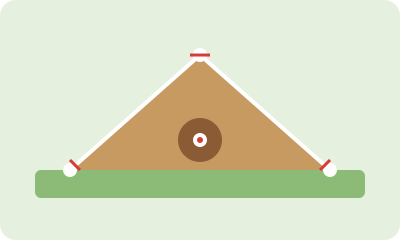

Mechanics
Balance, timing, and a repeatable delivery help pitchers work toward consistent throws.
Pitching combines mechanics, control, strategy, and teamwork. Every pitch starts with preparation.

Balance, timing, and a repeatable delivery help pitchers work toward consistent throws.
Command means being able to direct pitches toward intended parts of the strike zone.
Warm-ups, recovery, and appropriate training all have a place in a pitcher's routine.